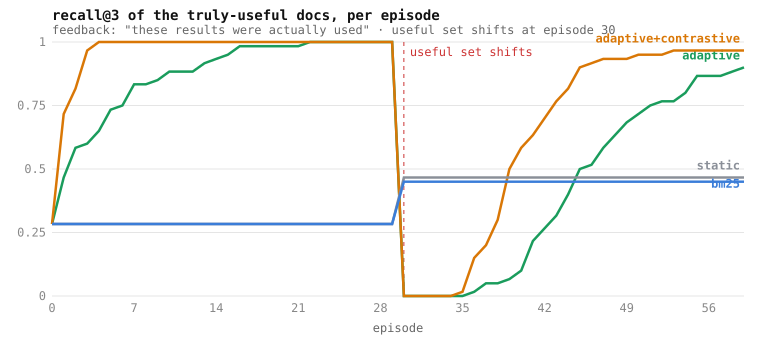
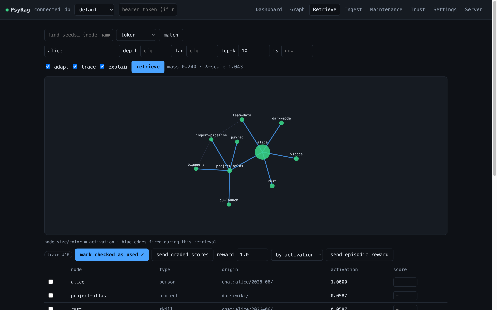
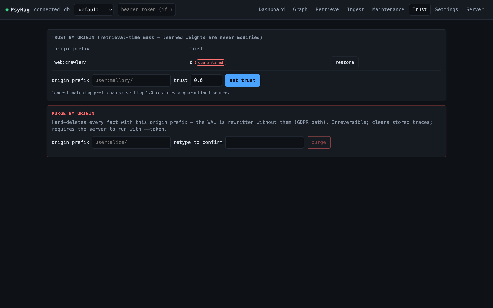

PsyRag stores facts as a temporal typed graph and, unlike vector or keyword memory, it adapts: connections that get used grow stronger, connections that don't decay, and an offline sleep cycle consolidates what matters. Recall reorders itself by learned usefulness.
same query "pricing", before and after "metering" proved useful 20×:
before: model 0.15 uses 0.15 seats 0.15 metering 0.15 alpha 0.15
after : metering 0.33 model 0.04 uses 0.04 seats 0.04 alpha 0.04A deterministic, zero-dependency benchmark: 20 topics, 8 candidate docs each, all lexically identical to their query. A hidden 3-of-8 are truly useful, and which ones is invisible to text. Only usage feedback can reveal it, and the feedback is attention-limited: top-3 results are always examined, deeper ones rarely, some sessions give nothing at all. Halfway through, the useful set silently changes.

Adaptive climbs from the no-signal floor to 1.0 in about twenty episodes. When the world changes it crashes to zero, below the static floor: the cost of having learned the old regime. Then it re-learns to 0.88 from nothing but the feedback stream.
Adaptive with negative feedback ("opened it, wasted my time") learns faster and recovers to 0.97. That series exists because the benchmark first exposed a bug: the weight update could drive an edge to exactly zero, where it was pruned and could never be re-learned. The fix, an exploration floor, shipped in v0.7.0.
Static is the same engine with feedback off. BM25 is the classic lexical baseline. Neither ever leaves the floor, because the signal is invisible to them.
git clone https://github.com/GuyShafir/PsyRag
cd PsyRag
cargo run --release -p psyrag --example adaptive_benchSeeded RNG, fixed timestamps: every run reproduces the chart byte-for-byte. CI asserts the result on every push, so this chart can never silently go stale against the code. Design notes in docs/bench.md.
The whole dependency tree is serde, serde_json and tiny_http. Binaries for Linux (x86-64, arm64) and macOS (Apple silicon), a multi-arch Docker image, and an MCP server for Claude Code.
# macOS (Apple silicon); linux x86-64 and arm64 on the releases page
curl -L https://github.com/GuyShafir/PsyRag/releases/latest/download/psyrag-v0.7.0-aarch64-apple-darwin.tar.gz | tar xz
./psyrag --wal mem.wal serve
# web console at http://localhost:8080/docker run -p 8080:8080 \
-v psyrag-data:/data \
ghcr.io/guyshafir/psyrag:latestMulti-tenant: --data-dir gives every agent or tenant an isolated database under /db/{name}/….
claude mcp add psyrag -- psyrag mcpA local adaptive memory for your repo: it learns a file co-touch graph from what the agent reads and edits, and recall reorders around how you actually work. Wiring in docs/mcp.md.


| vector / keyword memory | PsyRag | |
|---|---|---|
| structure | flat chunks | temporal typed graph: relationships, validity intervals |
| recall | static similarity | weighted spreading activation that learns from use |
| forgetting | TTL or manual | decay, homeostasis, sleep consolidation |
| truth changes | overwrite | native supersession, time-travel diff, blast radius |
| signal | none | citations, task outcomes, clicks, file-opens reshape recall |
| provenance | none | per-fact origin, trust quarantine, purge-by-subject (GDPR) |
| semantic entry | the whole model | bring-your-own embeddings pick the seeds; the learned graph does the expansion |
About 2,500 requests per second mixed workload with retrieve p95 under 5 ms on a stock CI runner, with the SLOs asserted from the server's own histograms. Weekly coverage-guided fuzzing. The adaptivity itself is pinned by a golden learning-quality suite: recall must reorder around what proved useful, deterministically, or CI fails.
PsyRag stays fully open source. We are weighing a hosted option on top of it: managed databases with automatic failover, managed backups and point-in-time restore, and support with an SLA. The paid part would be running it for you, never features withheld. Before building anything, we want to know whether you would use it.